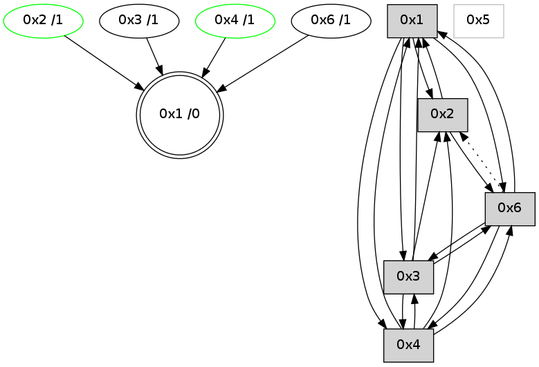

>> << IDX [start] -100 -25 -5 +0 +5 +25 +100 [685.164196014]
 Previous packets
----------------------------------------------------------------------
680.243113 beacon01(adaf) #0 coord=01,02,05,03,04,06 cycle=432.0ms assoc
-- color-indic=0 64 eb e7
680.253073 beacon02(adaf) #0 coord=01,02,05,03,04,06 cycle=432.0ms assoc 64 ba 18
680.263076 beacon05(adaf) #0 coord=01,02,05,03,04,06 cycle=432.0ms assoc 64 1c 32
680.273074 beacon03(adaf) #0 coord=01,02,05,03,04,06 cycle=432.0ms assoc 64 80 16
680.283075 beacon04(adaf) #0 coord=01,02,05,03,04,06 cycle=432.0ms assoc 64 26 3c
680.293075 beacon06(adaf) #0 coord=01,02,05,03,04,06 cycle=432.0ms assoc 64 52 20
680.304773 [Hello(4): seq=482 sym=2,3,1,6 sysInfo= stat=2:1,0,1,0/3:9,0,6,0/1:3,0,13,0/6:1,0,1,0]
680.307560 [Hello(1): seq=381 sym=2,4,3,6 sysInfo= stat=2:7,0,5,0/4:2,0,2,0/3:0,0,5,0/6:2,0,2,0]
----------------------------------------------------------------------
680.735220 beacon01(adaf) #0 coord=01,02,05,03,04,06 cycle=432.0ms assoc
-- color-indic=0 64 2f 88
680.745182 beacon02(adaf) #0 coord=01,02,05,03,04,06 cycle=432.0ms assoc 64 7e 77
680.755181 beacon05(adaf) #0 coord=01,02,05,03,04,06 cycle=432.0ms assoc 64 d8 5d
680.765183 beacon03(adaf) #0 coord=01,02,05,03,04,06 cycle=432.0ms assoc 64 44 79
680.775182 beacon04(adaf) #0 coord=01,02,05,03,04,06 cycle=432.0ms assoc 64 e2 53
680.785182 beacon06(adaf) #0 coord=01,02,05,03,04,06 cycle=432.0ms assoc 64 96 4f
680.796510 [STC(1) #0.17 to-color d=0]
----------------------------------------------------------------------
681.227329 beacon01(adaf) #0 coord=01,02,05,03,04,06 cycle=432.0ms assoc
-- color-indic=0 64 62 8f
681.237291 beacon02(adaf) #0 coord=01,02,05,03,04,06 cycle=432.0ms assoc 64 33 70
681.247291 beacon05(adaf) #0 coord=01,02,05,03,04,06 cycle=432.0ms assoc 64 95 5a
681.257290 beacon03(adaf) #0 coord=01,02,05,03,04,06 cycle=432.0ms assoc 64 09 7e
681.267291 beacon04(adaf) #0 coord=01,02,05,03,04,06 cycle=432.0ms assoc 64 af 54
681.277291 beacon06(adaf) #0 coord=01,02,05,03,04,06 cycle=432.0ms assoc 64 db 48
681.289213 [Hello(4): seq=483 sym=2,3,1,6 sysInfo= stat=2:1,0,1,0/3:10,0,6,0/1:4,0,14,0/6:1,0,1,0]
681.292181 [STC(6)->1 #0.17 to-color d=1]
681.293685 [Hello(1): seq=382 sym=2,4,3,6 sysInfo= stat=2:8,0,5,0/4:2,0,2,0/3:0,0,5,0/6:2,0,2,0]
681.297734 [STC(4)->1 #0.17 to-color d=1]
----------------------------------------------------------------------
681.719437 beacon01(adaf) #0 coord=01,02,05,03,04,06 cycle=432.0ms assoc
-- color-indic=0 64 a6 e0
681.729398 beacon02(adaf) #0 coord=01,02,05,03,04,06 cycle=432.0ms assoc 64 f7 1f
681.739398 beacon05(adaf) #0 coord=01,02,05,03,04,06 cycle=432.0ms assoc 64 51 35
681.749399 beacon03(adaf) #0 coord=01,02,05,03,04,06 cycle=432.0ms assoc 64 cd 11
681.759399 beacon04(adaf) #0 coord=01,02,05,03,04,06 cycle=432.0ms assoc 64 6b 3b
681.769398 beacon06(adaf) #0 coord=01,02,05,03,04,06 cycle=432.0ms assoc 64 1f 27
681.781093 [Hello(2): seq=976 sym=6,4,1,3 sysInfo= stat=6:6,0,2,0/4:1,0,2,0/1:1,0,13,0/3:4,0,6,0]
----------------------------------------------------------------------
682.211544 beacon01(adaf) #0 coord=01,02,05,03,04,06 cycle=432.0ms assoc
-- color-indic=0 64 ea 50
682.221508 beacon02(adaf) #0 coord=01,02,05,03,04,06 cycle=432.0ms assoc 64 bb af
682.231507 beacon05(adaf) #0 coord=01,02,05,03,04,06 cycle=432.0ms assoc 64 1d 85
682.241506 beacon03(adaf) #0 coord=01,02,05,03,04,06 cycle=432.0ms assoc 64 81 a1
682.251506 beacon04(adaf) #0 coord=01,02,05,03,04,06 cycle=432.0ms assoc 64 27 8b
682.261505 beacon06(adaf) #0 coord=01,02,05,03,04,06 cycle=432.0ms assoc 64 53 97
682.272328 [Hello(1): seq=383 sym=2,4,3,6 sysInfo= stat=2:9,0,5,0/4:2,0,3,0/3:0,0,5,0/6:2,0,2,0]
682.276863 [Hello(4): seq=484 sym=2,3,1,6 sysInfo= stat=2:1,0,1,0/3:11,0,6,0/1:4,0,14,0/6:1,0,1,0]
----------------------------------------------------------------------
682.703651 beacon01(adaf) #0 coord=01,02,05,03,04,06 cycle=432.0ms assoc
-- color-indic=0 64 2e 3f
682.713612 beacon02(adaf) #0 coord=01,02,05,03,04,06 cycle=432.0ms assoc 64 7f c0
682.723612 beacon05(adaf) #0 coord=01,02,05,03,04,06 cycle=432.0ms assoc 64 d9 ea
682.733613 beacon03(adaf) #0 coord=01,02,05,03,04,06 cycle=432.0ms assoc 64 45 ce
682.743614 beacon04(adaf) #0 coord=01,02,05,03,04,06 cycle=432.0ms assoc 64 e3 e4
682.753613 beacon06(adaf) #0 coord=01,02,05,03,04,06 cycle=432.0ms assoc 64 97 f8
682.765300 [Hello(2): seq=977 sym=6,4,1,3 sysInfo= stat=6:7,0,2,0/4:1,0,2,0/1:2,0,13,0/3:4,0,6,0]
----------------------------------------------------------------------
683.195761 beacon01(adaf) #0 coord=01,02,05,03,04,06 cycle=432.0ms assoc
-- color-indic=0 64 70 5e
683.205722 beacon02(adaf) #0 coord=01,02,05,03,04,06 cycle=432.0ms assoc 64 21 a1
683.215722 beacon05(adaf) #0 coord=01,02,05,03,04,06 cycle=432.0ms assoc 64 87 8b
683.225723 beacon03(adaf) #0 coord=01,02,05,03,04,06 cycle=432.0ms assoc 64 1b af
683.235722 beacon04(adaf) #0 coord=01,02,05,03,04,06 cycle=432.0ms assoc 64 bd 85
683.245722 beacon06(adaf) #0 coord=01,02,05,03,04,06 cycle=432.0ms assoc 64 c9 99
683.257416 [Hello(4): seq=485 sym=2,3,1,6 sysInfo= stat=2:1,0,1,0/3:12,0,6,0/1:4,0,14,0/6:1,0,1,0]
683.262360 [Hello(1): seq=384 sym=2,4,3,6 sysInfo= stat=2:10,0,5,0/4:2,0,3,0/3:0,0,5,0/6:3,0,2,0]
683.265187 [STC(1) #0.18 to-color d=0]
----------------------------------------------------------------------
683.687869 beacon01(adaf) #0 coord=01,02,05,03,04,06 cycle=432.0ms assoc
-- color-indic=0 64 b4 31
683.697831 beacon02(adaf) #0 coord=01,02,05,03,04,06 cycle=432.0ms assoc 64 e5 ce
683.707832 beacon05(adaf) #0 coord=01,02,05,03,04,06 cycle=432.0ms assoc 64 43 e4
683.717831 beacon03(adaf) #0 coord=01,02,05,03,04,06 cycle=432.0ms assoc 64 df c0
683.727831 beacon04(adaf) #0 coord=01,02,05,03,04,06 cycle=432.0ms assoc 64 79 ea
683.737833 beacon06(adaf) #0 coord=01,02,05,03,04,06 cycle=432.0ms assoc 64 0d f6
683.749394 [STC(6)->1 #0.18 to-color d=1]
683.753350 [STC(4)->1 #0.18 stable,to-color d=1]
683.755464 [Hello(2): seq=978 sym=6,4,1,3 sysInfo= stat=6:8,0,2,0/4:1,0,2,0/1:3,0,14,0/3:4,0,6,0]
683.758591 [STC(2)->1 #0.18 stable,to-color d=1]
683.760225 [TreeStatus(4)-.->1 #0.18 stable child=1]
683.764215 [TreeStatus(2)-.->1 #0.18 stable child=1]
----------------------------------------------------------------------
684.179979 beacon01(adaf) #0 coord=01,02,05,03,04,06 cycle=432.0ms assoc
-- color-indic=0 64 f8 81
684.189940 beacon02(adaf) #0 coord=01,02,05,03,04,06 cycle=432.0ms assoc 64 a9 7e
684.199940 beacon05(adaf) #0 coord=01,02,05,03,04,06 cycle=432.0ms assoc 64 0f 54
684.209939 beacon03(adaf) #0 coord=01,02,05,03,04,06 cycle=432.0ms assoc 64 93 70
684.219940 beacon04(adaf) #0 coord=01,02,05,03,04,06 cycle=432.0ms assoc 64 35 5a
684.229941 beacon06(adaf) #0 coord=01,02,05,03,04,06 cycle=432.0ms assoc 64 41 46
684.241645 [Hello(4): seq=486 sym=2,3,1,6 sysInfo= stat=2:1,0,1,0/3:12,0,6,1/1:5,0,15,0/6:1,0,1,0]
684.244080 [Hello(1): seq=385 sym=2,4,3,6 sysInfo= stat=2:11,0,6,1/4:2,0,4,1/3:0,0,5,0/6:3,0,3,0]
----------------------------------------------------------------------
684.672087 beacon01(adaf) #0 coord=01,02,05,03,04,06 cycle=432.0ms assoc
-- color-indic=0 64 3c ee
684.682048 beacon02(adaf) #0 coord=01,02,05,03,04,06 cycle=432.0ms assoc 64 6d 11
684.692048 beacon05(adaf) #0 coord=01,02,05,03,04,06 cycle=432.0ms assoc 64 cb 3b
684.702048 beacon03(adaf) #0 coord=01,02,05,03,04,06 cycle=432.0ms assoc 64 57 1f
684.712050 beacon04(adaf) #0 coord=01,02,05,03,04,06 cycle=432.0ms assoc 64 f1 35
684.722050 beacon06(adaf) #0 coord=01,02,05,03,04,06 cycle=432.0ms assoc 64 85 29
684.733798 [Hello(2): seq=979 sym=6,1 sysInfo= stat=6:9,0,2,0/1:4,0,14,0]